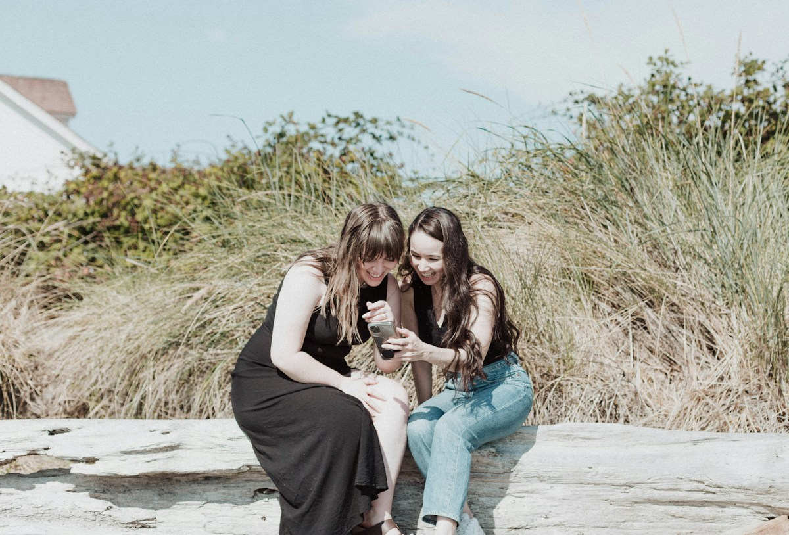

Take action
When it happens, you have options.
Talk to someone you trust. You can ask them to help you document what happened and make a report.
Four steps you can take
-
Step away from the conversation
Avoid replying or forwarding the harmful message. Mute notifications if you need a break.
-
Save the details privately
Keep screenshots, dates, usernames, and links where possible. For intimate images, avoid downloading or forwarding the material. Save the account details and ask a trusted adult or counselor for help.
-
Report and block
Use the platform’s reporting option on the message, post, or account. Block or restrict the account to limit further contact.
-
Reach out for support
Tell a trusted adult, teacher, or school counselor, especially if classmates are involved. If you are in immediate danger, contact local emergency services.
Support a friend
Check in privately.
You can say, “I saw what happened in the chat. Are you okay? Would you like me to go with you to talk to someone?” Ask what help they want, report harmful posts, and avoid drawing more attention to the harassment.
Find online safety resources →